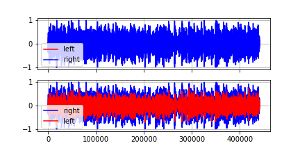

AMSS-Net
Usecases of Progresive Manipulation, and an ablation study
In this demonstration, we show that we can apply the proposed method repeatedly to manipulated audio tracks, which is also known as Progressive Manipulation used in conversational system.
Usecase 1: Progressive Manipulation for making Saptial Audio
- Copyright info.
- “Paulie Cerra band - Take me down Quick - live at bluesmoose radio 28 juli 2021”,
- by Blues Moose, licensed under Creative Commons Attribution licence (reuse allowed).
Paulie Cerra band - Take me down Quick - live recorded for bluesmoose radio - 28 juli 2021. at Cafe zaal de Comm - Groesbeek - coronaproof setting 1,5 meter socially distanced Paulie Cerra – vocals, keyboard, saxophone Ben Forrester – Guitar Billy Haynes – Bass, Vocals Alvino M. Bennet – Drums https://www.pauliecerra.com/ Licence Creative Commons Attribution licence (reuse allowed)
AMMS-Net can make an audio clip, which had been recorded with a single microphone, provide a better and realistic hearing experience to users.
For example, there are people playing instruments and singing in the above video.
- The location of each person is
- bass guitarist: rightmost
- vocalist, playing piano: right
- drummer: relatively left
We can make a better audio clip in terms of the spatial audio with AMSS-Net.
- For example,
- pan bass completely to the left side: left 100% and right 0% (the operation 1 in the table below)
- pan vocals to the right side: left 20% and right 80% (the operation 2 in the table below)
- Also we can modify the timbre of specified instrument to avoid interference of different sources.
- by typing apply highpass to drums (the operation 3 in the table below)
| order | description | Audio | Spectrogram | Wav |
|---|---|---|---|---|
| 0 | original | |||
| 1 | pan bass completely to the right side |  |
 |
|
| 2 | pan drums to the left side |  |
 |
|
| 3 | pan vocals to the right side |  |
 |
|
| 4 | apply light highpass to drums |  |
 |
Usecase 2: Progressive Manipulation to Remove Unwanted Noises
- Copyright info.
- “Manchester Life : Reggae music on market street ”,
- by Africa Without Borders, licensed under Creative Commons Attribution licence (reuse allowed).
Manchester Life : Reggae music on market street Licence Creative Commons Attribution licence (reuse allowed)
An audio clip may contain noises such as people shouting noise in the middle of a concert.
- For example, in the above youtube (from the movie Begin again),
- a man shouts (starting from 0:08 in the original audio clip in the table below)
- in the middle of a rooftop busking to ask them to stop playing
We can also observe reflections of some sounds, especially from the kick drums, which might annoy some listeners.
We perceive them more severe when we increase the volume of those instruments (the operation 1 in the table below)
Then, we can make a better audio clip to remove unwanted sounds or remove the reverberation effect with AMSS-Net as follows:
| order | description | Audio | Spectrogram | Wav |
|---|---|---|---|---|
| 0 | original |  | ||
| 1 | decrease the volume of vocals |  |
 |
|
| 2 | increase the volume of drums, bass |  |
 |
|
| 3 | remove reverb from bass, drums |  |
 |
Usecase 3: Progrssive Manipulation for More Dramatic Introduction with Musical Effects
- Copyright info.
- “Zhen feat. Domenico Godino, “Time is running out””,
- by percefal, licensed under Creative Commons Attribution licence (reuse allowed).
Muse cover, live @ Work In Progress Music Pub 31 ottobre 2015 Licence Creative Commons Attribution licence (reuse allowed)
We are used to some dramatic introduction with musical effects such as fade-in or band pass filters.
Although some artists show performance with special devices for musical effects as described in the figure below,
it is usually hard to apply those effects in a real performance with limited devices and engineers.
In this case, we can use AMSS-Net to post-process the recorded clip for more dramatic introduction as follows.
| order | description | Audio | Spectrogram | Wav |
|---|---|---|---|---|
| 0 | original | |||
| 1 | apply light highpass to vocals |  |
 |
|
| 2 | apply medium highpass to bass |  |
 |
|
| 3 | apply light lowpass to drums |  |
 |
Ablation Study: Progrssive Manipulation
- Methods based on neural networks sometimes suffer from artifacts, which are not present in the original source.
- Although they sound negligible after a single manipulation task, they can be large enough to be perceived after progressively applying several.
- To investigate artifacts created by progressive manipulation, we apply the same AMSS task ``apply highpass to drums’’ to a track in a progressive manner.
| model | desc x times | Audio | Spectrogram |
|---|---|---|---|
| origin | N/A | ||
| amssnet | apply highpass to vocals x 1 | ||
| amssnet | apply highpass to vocals x 20 | ||
| wo_csa | apply highpass to vocals x 20 | ||
| wo_smpocm | apply highpass to vocals x 20 |
- Our AMSS-Net contains minor artifacts compare to them because each decoding block of AMSS-Net has a CSA mechanism, a unique structure that prevents unwanted noise generated by intermediate manipulated features.